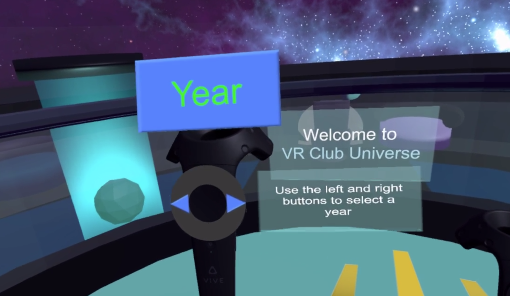

Virtual Reality Club at UCSD: VR Universe
VR Universe began as a intermediate level project introduced by the Virtual Reality Club in winter of 2017. I was brought onto the project team in the fall of 2017 in hopes of improving the usability and intuitiveness of the project. The purpose of the project is to act as a showcase platform that would host countless virtual reality projects, from past to present. It would host projects that use the HTC Vive and the Oculus Rift, where each project would be a planet in the "universe" that we crafted. The user would travel through the universe in their spaceship, which orbits around the sun.
Framing the Problem
- The goal for VR Universe is to eventually host years' worth of VR projects. The team believed that it was necessary to implement some sort of filtering system to make it easier to navigate the universe to find specific projects.
- VR Universe lacked a means of making it more user-friendly to first-time VR users which was an issue as our target audience is mostly students who have never used or experienced virtual reality before.
The Ask
- Design and implement an informative tutorial system that would both convey the purpose of the project and instruct first-time VR users how to use VR Universe.
- Create a category search filter system based on currently existing mechanisms within VR Universe and building off those mechanisms.
- Improve the overall intuitiveness of the project through re-orienting labels on VR Universe's planets and refactoring through student feedback based on project's current flaws.
Designing VR Universe's Tutorial System
Inspiration and Sketches
The initial tutorial system that was in place was a stationary panel that users easily missed if they weren't standing and facing that direction. I needed to figure out a way where the user would always be able to see the and follow the tutorial. Inspired by the labels and the easy to follow tutorial of Google's Tiltbrush, I was compelled to make my design utilize labels that were attached to the controller during the virtual reality experience so that the tutorial instructions would never leave the user's sight.
Implementation and User Testing
Refactoring Through Student Feedback
From left to right: prototypes of the new tutorial, Google survey results after user testing on the new tutorial
Despite the fact that the tutorial labels were always attached to the controller, users still missed the tutorial because they weren't always looking at the controllers. I'd figured that a introduction starting panel that informed the user to follow along the tutorial would mitigate the issue. However, I also had to begin incorporating the search filter system into our tutorial so I once again redesigned the tutorial.
Redesigning the Tutorial System and Designing the Search Filter System
Sketches and Low-Fidelity Prototypes
From left to right: sketches of new tutorial, category search filter, and hi-fi prototypes of the category, search results, and year panel


I created the search filter system to utilize three main panels: a "years" panel, a "search results" panel, and a "category" panel. The "years" panel would have all the years of the projects that we currently hosted. The "category" panel was based on the fact that each project had its own tags, so using the most common tags from our current pool of projects, we created twelve different categories. The user can select a year, and then select multiple categories based on their preferences. Their choices would load onto the "search results" panel, which would be populated by planets that were filtered from the user's choices. The tutorial system redesign would now require the user to interact with each of the three panels while inform the user of the project's purpose within each step. The intention is that the some of the tutorial labels would be fixed to the user's head and some would be fixed to the three panels.
Second Round of User Testing
Refining the Tutorial and Search Filter System
TBA